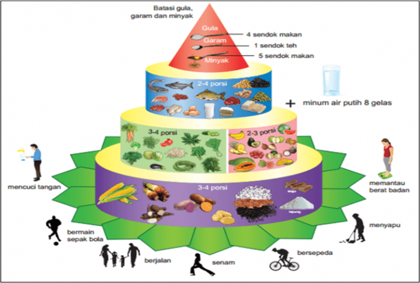

Gizi seimbang adalah susunan pangan sehari-hari yang mengandung zat gizi seperti yang dilansir dari Kemenkes RI. Nilai gizi ini memiliki jenis dan jumlah yang sesuai dengan kebutuhan tubuh dengan memperhatikan sejumlah faktor di bawah ini.
Gizi seimbang bisa dimulai dengan pola makan yang baik. Sejauh ini, tidak ada satu makanan yang mengandung nutrisi yang dibutuhkan oleh tubuh. Itu sebabnya, Anda perlu memperoleh semua zat gizi dari berbagai macam makanan yang berbeda.
Dengan begitu, tubuh mendapatkan gizi yang cukup dan dapat menjalankan fungsinya tanpa masalah.
Tumpeng Gizi Seimbang adalah rancangan untuk memperbaiki prinsip lama “4 sehat 5 sempurna” yang dianggap tidak lagi sesuai. Gambar tumpeng ini tidak hanya berisi panduan sehat, melainkan juga panduan pola hidup secara keseluruhan.